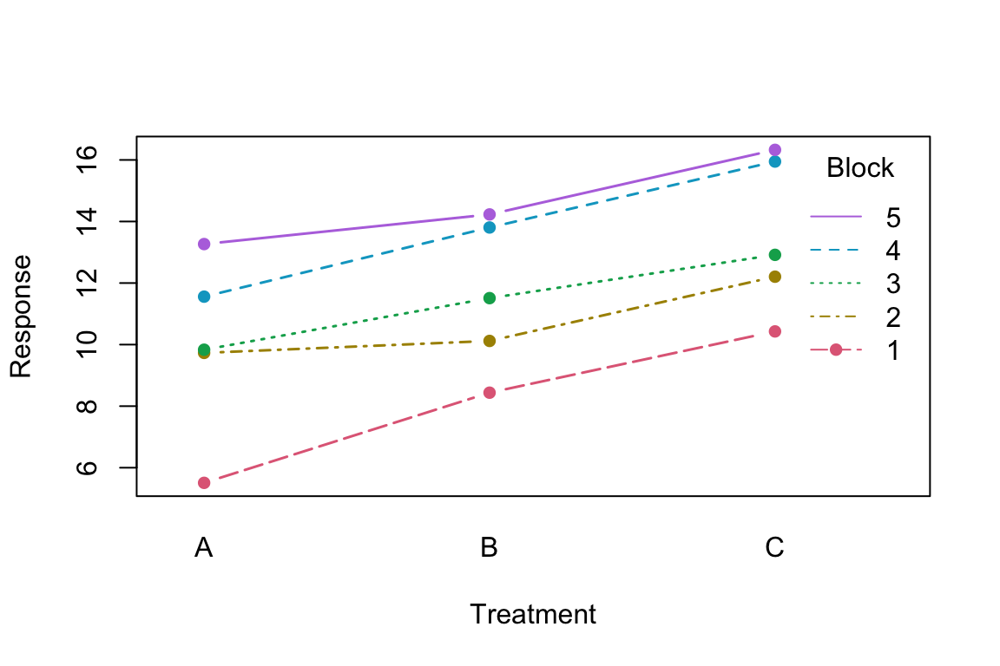
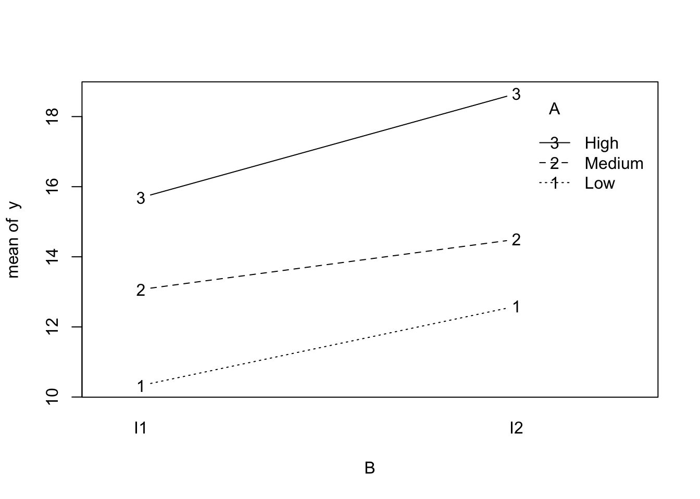

In this chapter, we study one-way ANOVA, two-way ANOVA, and analysis of covariance as special cases of the general linear model. The main goal is to show that these topics are not separate from regression, but are natural modelling frameworks within the same matrix-based system. This helps students unify mean comparisons, factor effects, covariate adjustment, and interaction analysis under one common language.
Learning Objectives
By the end of this chapter, students should be able to:
explain how one-way ANOVA is a special case of the linear model;
formulate and interpret two-way ANOVA models with and without interaction;
explain the role of a covariate in ANCOVA;
distinguish between main effects and interaction effects in factorial models;
interpret ANOVA and ANCOVA models using regression notation and software output;
compare group means appropriately after adjusting for covariates.
Reading
Recommended reading for this chapter:
Seber and Lee:
sections on analysis of variance
analysis of covariance
linear model treatment of factor and covariate effects
Montgomery, Peck, and Vining:
sections on qualitative predictors
ANOVA-style linear models
ANCOVA and adjusted comparisons
Why These Topics Belong Together
Students often first encounter ANOVA and regression as if they were separate techniques. But in fact, they are part of the same linear modelling framework. For example:
one-way ANOVA compares group means;
two-way ANOVA studies the effects of two factors and possibly their interaction;
ANCOVA compares groups while adjusting for a continuous covariate.
All of these can be written as linear models using an appropriate design matrix. This week emphasizes that unification.
The content of the model depends on how we construct \(\mathbf{X}\). If \(\mathbf{X}\) contains continuous predictors, we obtain regression models. If \(\mathbf{X}\) contains indicator variables for factor levels, we obtain ANOVA-type models. If \(\mathbf{X}\) contains both factor indicators and continuous covariates, we obtain ANCOVA-type models.
7.1 Design, randomization, and the experimental unit
The experimental unit is the smallest unit independently assigned a treatment. Replication means independently treated units; repeated measurements or multiple subsamples from one unit do not create additional treatment replicates. Identify the unit before constructing the data table or choosing error degrees of freedom.
Randomization allocates treatments by a random mechanism, helping separate treatment assignment from potential outcomes. Blocking groups similar units using information available before treatment and randomizes within those groups. Random sampling supports generalization to a population; random treatment assignment supports a causal comparison in the experiment. Neither alone guarantees both claims.
ImportantAvoid pseudoreplication
If one classroom receives A and another receives B, measuring 30 students per classroom does not produce 30 independently randomized classrooms per treatment. A model that treats all 60 measurements as independent treatment replicates can severely understate uncertainty. The design determines the relevant replication.
Example 7.1 (A Randomized Complete Block Design) Suppose five production batches each provide three comparable units. Within every batch, randomly assign one unit to each of three treatments. There are 15 experimental units and five replications per treatment. An additive fixed-block model is
Comparing \(Y\sim\text{block}\) with \(Y\sim\text{block}+\text{treatment}\) tests treatment differences after accounting for batch variation. There are \(15-(1+4+2)=8\) residual degrees of freedom. With one unit in each block-by-treatment cell, treatment-by-block interaction cannot be separated from error; the additive interpretation is an assumption.
Show R code
set.seed(8561)blocked <-data.frame(block =factor(rep(1:5, each =3)),unit =rep(1:3, 5))# Randomize treatment labels among the three units in each block.blocked$treatment <-factor(unlist(lapply(1:5, function(b) sample(c("A", "B", "C")))),levels =c("A", "B", "C"))block_effect <-c(-3, -1, 0, 2, 4)treatment_effect <-c(A =0, B =1.5, C =3)blocked$y <-10+ block_effect[as.integer(blocked$block)] + treatment_effect[blocked$treatment] +rnorm(nrow(blocked), sd =0.8)fit_block_only <-lm(y ~ block, data = blocked)fit_block_treatment <-lm(y ~ block + treatment, data = blocked)anova(fit_block_only, fit_block_treatment)
Analysis of Variance Table
Model 1: y ~ block
Model 2: y ~ block + treatment
Res.Df RSS Df Sum of Sq F Pr(>F)
1 10 35.101
2 8 2.873 2 32.227 44.869 4.489e-05 ***
---
Signif. codes: 0 '***' 0.001 '**' 0.01 '*' 0.05 '.' 0.1 ' ' 1
Show R code
with(blocked, interaction.plot(treatment, block, y, type ="b", pch =16,col =hcl.colors(5, "Dark 3"), lwd =1.5,xlab ="Treatment", ylab ="Response",trace.label ="Block"))

Figure 7.1: Simulated responses within five blocks. Comparing treatments within the same block avoids attributing the large between-batch shifts to treatment. The connecting lines guide comparisons; the model does not assert a linear treatment scale.
A randomized complete design without blocks uses treatment alone. The same regression machinery handles either design, but the design and scientific question decide which comparison is meaningful.
7.2 One-Way ANOVA
Suppose observations are divided into \(g\) groups, and we want to compare their means. One-way ANOVA can be written as
\(z_{1i}=1\) if observation \(i\) is in group B and 0 otherwise;
\(z_{2i}=1\) if observation \(i\) is in group C and 0 otherwise.
Then:
mean of group A: \(\beta_0\);
mean of group B: \(\beta_0 + \beta_1\);
mean of group C: \(\beta_0 + \beta_2\).
Thus one-way ANOVA is simply a regression model with categorical predictors.
ANOVA Table Interpretation
For one-way ANOVA, the total variation is decomposed into:
variation between groups;
variation within groups.
The standard ANOVA table compares the mean square for groups to the mean square for error. This is an \(F\) test for whether the group means are all equal. Within the linear model framework, this is just a comparison of a reduced intercept-only model and a fuller model that includes group indicators.
\(\alpha_i\) is the effect of level \(i\) of factor A;
\(\beta_j\) is the effect of level \(j\) of factor B;
\((\alpha\beta)_{ij}\) is the interaction effect for the combination of levels \((i,j)\).
Main Effects in Two-Way ANOVA
A main effect describes how the mean response changes across levels of one factor, averaging over the levels of the other factor, when the interaction is absent or appropriately interpreted. For example:
factor A main effect asks whether changing the level of A shifts the mean response;
factor B main effect asks the analogous question for B.
However, if interaction is strong, main effects must be interpreted with care.
Interaction in Two-Way ANOVA
Interaction means that the effect of one factor depends on the level of the other factor. If there is no interaction, the mean structure is additive:
If interaction is present, the difference among levels of factor A changes across levels of factor B, or vice versa. Graphically, in an interaction plot, no interaction corresponds roughly to parallel profiles.
Null Hypotheses in Two-Way ANOVA
Common hypotheses include:
no main effect of factor A;
no main effect of factor B;
no interaction between A and B.
Each of these is a general linear hypothesis and can be tested with an \(F\) statistic by comparing appropriate reduced and full models.
Importance of Testing Interaction First
In practice, it is often wise to assess the interaction term before making strong statements about main effects. Why? Because if interaction is present, the effect of factor A is not the same at all levels of factor B, and vice versa. So a marginal main-effect interpretation may be misleading.
Balanced and Unbalanced Designs
A design is balanced if each factor combination has the same number of observations. Balanced designs have many nice algebraic properties:
sums of squares decompose cleanly;
effects are more orthogonal;
interpretations are often simpler.
In unbalanced designs, sequential sums of squares can depend on term order, and software defaults may test different hypotheses. A fixed estimable hypothesis has the same inference under equivalent full-rank recodings. State the comparison of means first, then choose the model comparison that tests it. Students should be aware that real data are often unbalanced.
Two-Way ANOVA as Regression
Just as in one-way ANOVA, two-way ANOVA can be represented using indicator variables. The design matrix can include:
indicators for levels of factor A;
indicators for levels of factor B;
products of indicators for interaction terms.
So two-way ANOVA is also just a regression model with categorical predictors and possible interactions.
This model compares groups while adjusting for the covariate.
Why ANCOVA Is Useful
Suppose two groups differ in an outcome, but also differ in a background variable related to the outcome. If we compare the raw group means, the comparison may be confounded by the background variable. ANCOVA adjusts for the covariate so that the group comparison is made at a common covariate level. This often improves both fairness of comparison and precision of inference.
\(\beta_1\) is the change in the mean response associated with a one-unit increase in \(x\), holding group fixed;
\(\beta_2\) is the difference between groups, holding the covariate fixed.
Thus ANCOVA is a regression model in which one of the predictors is a factor.
Parallel Slopes Assumption
A standard ANCOVA model without interaction assumes the relationship between the response and the covariate has the same slope in all groups. That is, if
Now the slope in \(x\) depends on the group. This model should be considered when the relationship between the response and the covariate appears different across groups.
Why the Parallel Slopes Assumption Matters
If the slopes are not truly parallel but we fit a common-slope ANCOVA model, then the adjusted group comparison may be misleading. So a practical workflow is often:
fit the interaction model first;
assess whether the interaction is needed;
if the interaction is not important, use the simpler common-slope ANCOVA model.
Adjusted Means
A major idea in ANCOVA is the comparison of adjusted means. These are group means adjusted to a common covariate value, often the overall mean of the covariate. Adjusted means are useful because they allow group comparison after accounting for systematic covariate differences.
One-Way ANOVA, Two-Way ANOVA, and ANCOVA as Nested Models
These topics can all be understood through model comparison. Examples:
one-way ANOVA compares the intercept-only model to a model with group effects;
two-way ANOVA compares models with and without main effects or interaction;
ANCOVA compares models with and without the covariate, group effect, or interaction.
This nested-model view links directly back to the general linear hypothesis framework.
Post Hoc Comparisons
Plan scientifically meaningful comparisons before inspecting the results when possible. An omnibus F test and a comparison of particular groups answer different questions; omnibus significance does not justify an arbitrary family of unadjusted pairwise tests. Examples include:
all pairwise comparisons;
treatment versus control;
preplanned contrasts.
These are again linear functions of model parameters. Use a stated comparison family: for example, Tukey intervals for all pairwise mean differences, or Holm-adjusted p-values for a specified family of tests. Planned comparisons also require multiplicity control when the inferential claim concerns a family. These comparisons use the contrast framework from the preceding chapter.
Interpretation and Caution
In factor models, coefficient interpretation depends on coding. For example, treatment coding, sum-to-zero coding, and cell-means coding all yield different raw coefficients. Therefore students should focus on:
fitted means;
differences among means;
interactions;
clearly defined hypotheses.
These are more stable and meaningful than memorizing one coding-specific coefficient interpretation.
Worked Example With One-Way ANOVA
Suppose three teaching methods are compared. A one-way ANOVA model asks whether the mean outcome differs across the three methods. This can be written either as a group-means model or as a regression with two indicators and an intercept. The overall \(F\) test asks whether all three group means are equal. If the null is rejected, further contrasts can be used to compare specific methods.
Worked Example With Two-Way ANOVA
Suppose yield is measured under:
three fertilizer types;
two irrigation levels.
A two-way ANOVA model can assess:
whether fertilizer matters;
whether irrigation matters;
whether the effect of fertilizer depends on irrigation.
This is a direct example of main effects and interaction in a factorial design.
Worked Example With ANCOVA
Suppose two treatment groups are compared on a final score, and baseline score is available as a covariate. A simple ANCOVA model adjusts the treatment comparison for baseline. This often provides a more precise and fairer comparison than comparing final means alone.
7.5 R Demonstration
Simulate one-way ANOVA data
Show R code
set.seed(8561)group <-factor(rep(c("A", "B", "C"), each =12))mu <-c(A =10, B =13, C =15)y <- mu[group] +rnorm(length(group), sd =2)dat1 <-data.frame(y = y, group = group)fit1 <-lm(y ~ group, data = dat1)summary(fit1)
Call:
lm(formula = y ~ group, data = dat1)
Residuals:
Min 1Q Median 3Q Max
-4.8920 -1.1980 0.1736 1.3460 4.7288
Coefficients:
Estimate Std. Error t value Pr(>|t|)
(Intercept) 10.4231 0.7373 14.136 1.48e-15 ***
groupB 2.8863 1.0428 2.768 0.009179 **
groupC 3.7914 1.0428 3.636 0.000933 ***
---
Signif. codes: 0 '***' 0.001 '**' 0.01 '*' 0.05 '.' 0.1 ' ' 1
Residual standard error: 2.554 on 33 degrees of freedom
Multiple R-squared: 0.3041, Adjusted R-squared: 0.262
F-statistic: 7.212 on 2 and 33 DF, p-value: 0.002521
Show R code
anova(fit1)
Analysis of Variance Table
Response: y
Df Sum Sq Mean Sq F value Pr(>F)
group 2 94.098 47.049 7.2117 0.002521 **
Residuals 33 215.291 6.524
---
Signif. codes: 0 '***' 0.001 '**' 0.01 '*' 0.05 '.' 0.1 ' ' 1
b <-coef(fit1)V <-vcov(fit1)# Under treatment coding with A as reference:# mean_A = beta0# mean_B = beta0 + beta_groupB# mean_C = beta0 + beta_groupC# Compare B and Ca <-c(0, 1, -1)est <-sum(a * b)se <-sqrt(t(a) %*% V %*% a)t_stat <- est / sedf <-df.residual(fit1)p_val <-2*pt(abs(t_stat), df = df, lower.tail =FALSE)c(estimate = est, se = se, t = t_stat, p_value = p_val)
estimate se t p_value
-0.9051546 1.0427509 -0.8680449 0.3916388
R Demonstration With Two-Way ANOVA
Simulate factorial data
Show R code
set.seed(8561)A <-factor(rep(c("Low", "Medium", "High"), each =16),levels =c("Low", "Medium", "High"))B <-factor(rep(rep(c("I1", "I2"), each =8), times =3))mean_table <-matrix(c(10, 12,13, 15,16, 20), nrow =3, byrow =TRUE)mu2 <-numeric(length(A))for (i inseq_along(mu2)) { mu2[i] <- mean_table[which(levels(A) == A[i]), which(levels(B) == B[i])]}y2 <- mu2 +rnorm(length(mu2), sd =1.8)dat2 <-data.frame(y = y2, A = A, B = B)
Fit additive and interaction models
Show R code
fit2_add <-lm(y ~ A + B, data = dat2)fit2_int <-lm(y ~ A * B, data = dat2)summary(fit2_add)
Call:
lm(formula = y ~ A + B, data = dat2)
Residuals:
Min 1Q Median 3Q Max
-5.0540 -0.9970 0.0499 1.2429 4.4947
Coefficients:
Estimate Std. Error t value Pr(>|t|)
(Intercept) 10.3493 0.6189 16.722 < 2e-16 ***
AMedium 2.3237 0.7580 3.066 0.003705 **
AHigh 5.7129 0.7580 7.537 1.88e-09 ***
BI2 2.2215 0.6189 3.589 0.000829 ***
---
Signif. codes: 0 '***' 0.001 '**' 0.01 '*' 0.05 '.' 0.1 ' ' 1
Residual standard error: 2.144 on 44 degrees of freedom
Multiple R-squared: 0.6152, Adjusted R-squared: 0.589
F-statistic: 23.45 on 3 and 44 DF, p-value: 3.208e-09
Show R code
summary(fit2_int)
Call:
lm(formula = y ~ A * B, data = dat2)
Residuals:
Min 1Q Median 3Q Max
-4.6795 -1.0816 0.0961 1.2392 4.0989
Coefficients:
Estimate Std. Error t value Pr(>|t|)
(Intercept) 10.3280 0.7666 13.472 < 2e-16 ***
AMedium 2.7409 1.0842 2.528 0.0153 *
AHigh 5.3598 1.0842 4.944 1.28e-05 ***
BI2 2.2641 1.0842 2.088 0.0429 *
AMedium:BI2 -0.8343 1.5333 -0.544 0.5892
AHigh:BI2 0.7063 1.5333 0.461 0.6474
---
Signif. codes: 0 '***' 0.001 '**' 0.01 '*' 0.05 '.' 0.1 ' ' 1
Residual standard error: 2.168 on 42 degrees of freedom
Multiple R-squared: 0.6243, Adjusted R-squared: 0.5795
F-statistic: 13.96 on 5 and 42 DF, p-value: 4.793e-08
Show R code
anova(fit2_add, fit2_int)
Analysis of Variance Table
Model 1: y ~ A + B
Model 2: y ~ A * B
Res.Df RSS Df Sum of Sq F Pr(>F)
1 44 202.24
2 42 197.48 2 4.758 0.506 0.6066
Show R code
anova(fit2_int)
Analysis of Variance Table
Response: y
Df Sum Sq Mean Sq F value Pr(>F)
A 2 264.129 132.065 28.087 1.804e-08 ***
B 1 59.220 59.220 12.595 0.0009681 ***
A:B 2 4.758 2.379 0.506 0.6065586
Residuals 42 197.484 4.702
---
Signif. codes: 0 '***' 0.001 '**' 0.01 '*' 0.05 '.' 0.1 ' ' 1
Interaction plot
Show R code
with(dat2, interaction.plot(x.factor = B, trace.factor = A, response = y,fun = mean, type ="b", legend =TRUE))

R Demonstration With ANCOVA
Simulate ANCOVA-style data
Show R code
set.seed(8561)n <-80group3 <-factor(rep(c("Control", "Treatment"), each = n /2))x <-rnorm(n, mean =50, sd =10)y3 <-20+0.7* x +ifelse(group3 =="Treatment", 4, 0) +rnorm(n, sd =4)dat3 <-data.frame(y = y3, x = x, group = group3)fit3 <-lm(y ~ x + group, data = dat3)fit3_int <-lm(y ~ x * group, data = dat3)summary(fit3)
Call:
lm(formula = y ~ x + group, data = dat3)
Residuals:
Min 1Q Median 3Q Max
-10.1507 -2.5151 -0.1405 2.1190 9.7267
Coefficients:
Estimate Std. Error t value Pr(>|t|)
(Intercept) 20.6057 2.0562 10.021 1.32e-15 ***
x 0.6784 0.0390 17.395 < 2e-16 ***
groupTreatment 4.1699 0.8934 4.667 1.27e-05 ***
---
Signif. codes: 0 '***' 0.001 '**' 0.01 '*' 0.05 '.' 0.1 ' ' 1
Residual standard error: 3.975 on 77 degrees of freedom
Multiple R-squared: 0.8016, Adjusted R-squared: 0.7964
F-statistic: 155.5 on 2 and 77 DF, p-value: < 2.2e-16
Show R code
summary(fit3_int)
Call:
lm(formula = y ~ x * group, data = dat3)
Residuals:
Min 1Q Median 3Q Max
-9.8391 -2.7615 -0.1328 2.4626 9.8774
Coefficients:
Estimate Std. Error t value Pr(>|t|)
(Intercept) 22.06211 2.66126 8.290 3.06e-12 ***
x 0.64943 0.05151 12.607 < 2e-16 ***
groupTreatment 0.83332 3.96347 0.210 0.834
x:groupTreatment 0.06830 0.07903 0.864 0.390
---
Signif. codes: 0 '***' 0.001 '**' 0.01 '*' 0.05 '.' 0.1 ' ' 1
Residual standard error: 3.981 on 76 degrees of freedom
Multiple R-squared: 0.8035, Adjusted R-squared: 0.7958
F-statistic: 103.6 on 3 and 76 DF, p-value: < 2.2e-16
Show R code
anova(fit3, fit3_int)
Analysis of Variance Table
Model 1: y ~ x + group
Model 2: y ~ x * group
Res.Df RSS Df Sum of Sq F Pr(>F)
1 77 1216.6
2 76 1204.7 1 11.837 0.7468 0.3902